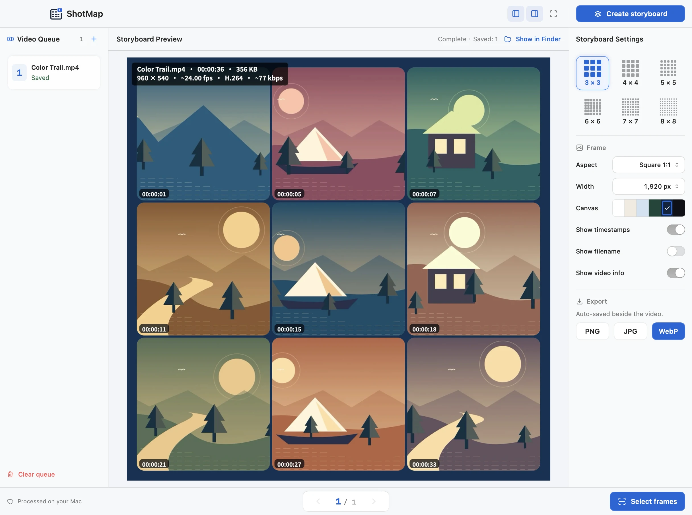

Make a square WebP storyboard with video details
Set a 1:1 layout, keep the timecodes and add the source video’s details.
The examples use ShotMap 0.2.20 on macOS 13 or later and Color Trail.mp4, a 36-second, 960 × 540 sample video. Put the video in a folder where you can save files.
- Add Color Trail.mp4 to the queue. In Storyboard Settings, choose 3 × 3, Square 1:1 and 1,920 px.
- Choose the navy swatch, keep Show timestamps on and turn on Show video info. The info block includes the filename, so leave the separate filename switch off.
- Select WebP under Export and click Create storyboard. Use Show in Finder when the preview is ready.

Check the result
Use Finder’s Get Info to confirm the .webp extension, and open the image in Preview. In this example, the 1:1 preset produced a 1920 × 1919 px image. Look for timecodes on the tiles and the source details at the upper left.